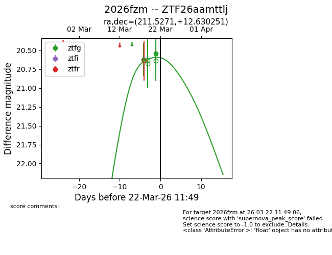
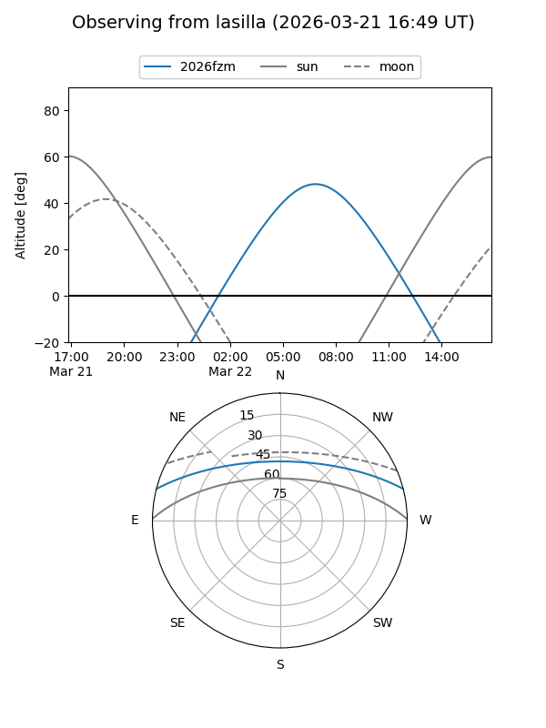
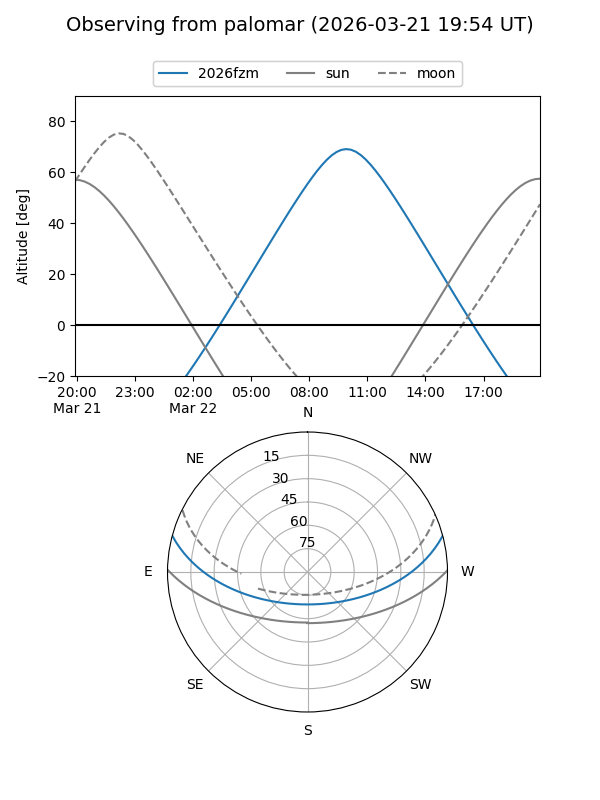
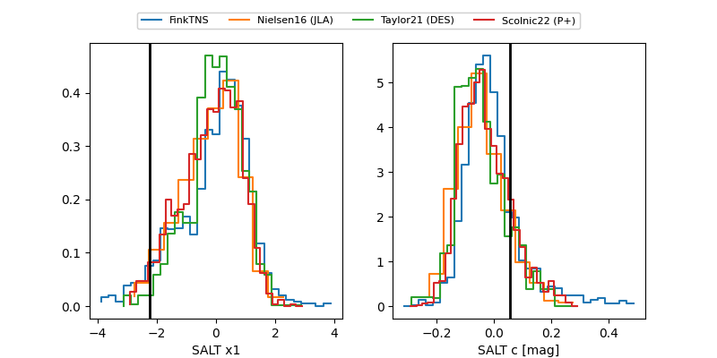

2026fzm
Target 2026fzm at 2026-03-22 11:51
Aliases and brokers:
FINK: link
Lasair: link
ALeRCE: link
TNS: link
YSE: link
alt names
ZTF26aamttlj (ztf,fink_ztf)
2026fzm (tns,yse)
Coordinates:
equatorial (ra, dec) = 211.5271,+12.63025
equatorial (HMS+DMS) = 14:06:06.51,+12:37:48.90
galactic (l, b) = (356.9301,+67.28963)
Flags:
Photometry:
last ztfg=20.54
2 ztfg detections
Lightcurve

Visibility


Additional plots
